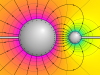

electric_potential

Definition: The electric potential (also called the electric field potential, potential drop, the electrostatic potential) is defined as the amount of work energy needed to move a unit of electric charge from a reference point to the specific point in an electric field. More precisely, it is the energy per unit charge for a test charge that is so small that the disturbance of the field under consideration is negligible. Furthermore, the motion across the field is supposed to proceed with negligible acceleration, so as to avoid the test charge acquiring kinetic energy or producing radiation. By definition, the electric potential at the reference point is zero units. Typically, the reference point is earth or a point at infinity, although any point can be used.
Source: Wikipedia
Wikipedia Page
Wikidata Page